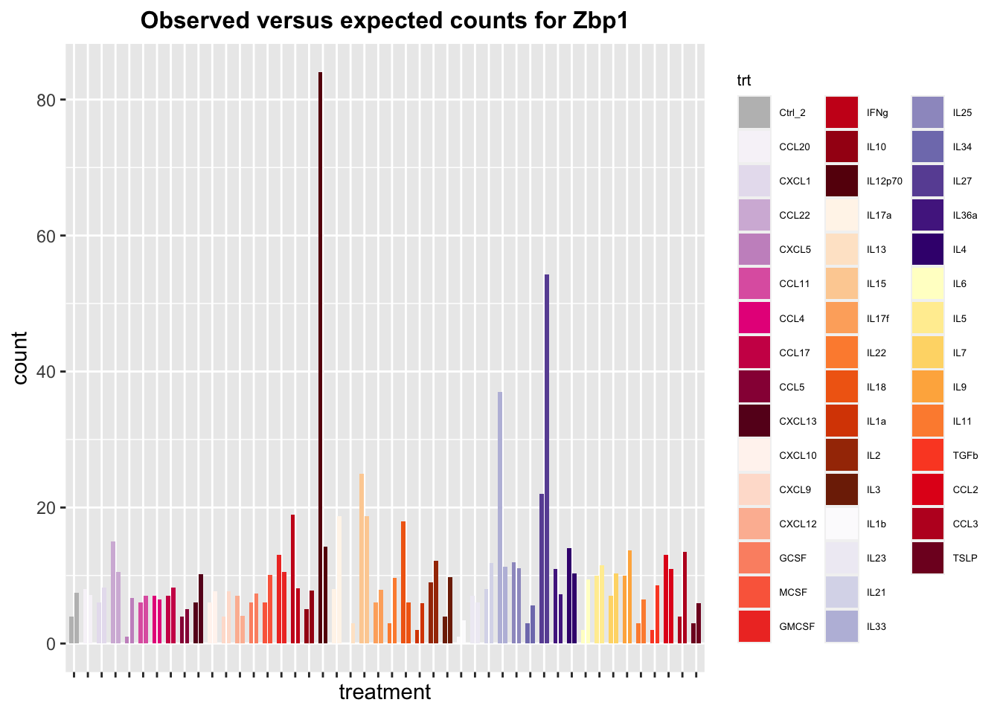
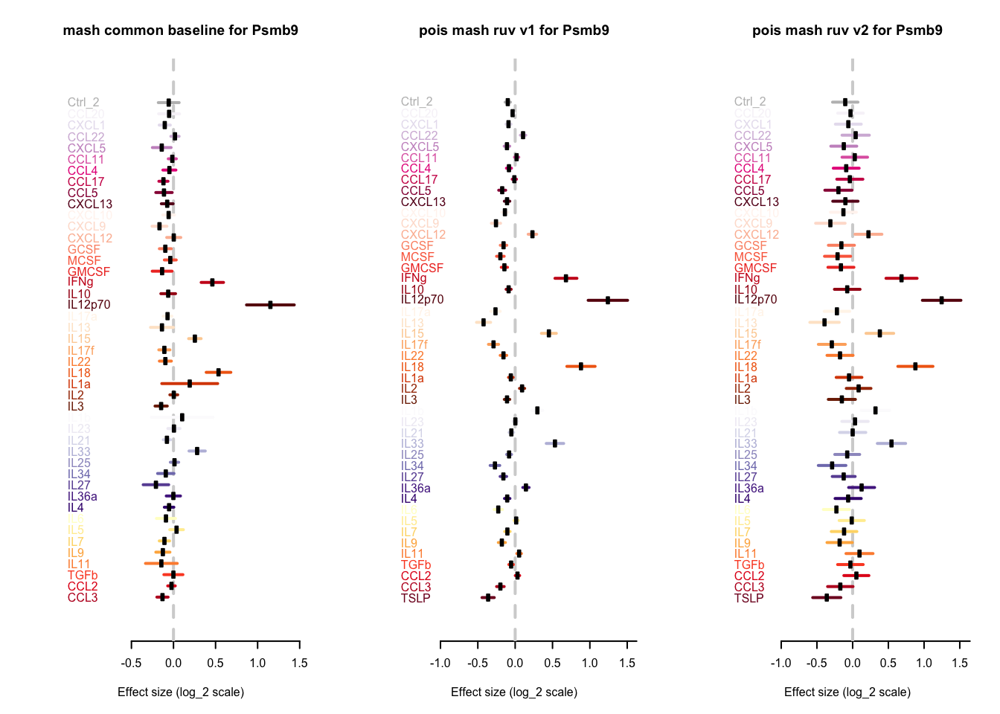

Application of poisson mash ruv to dendritic cells in single cell cytokines data
Yusha Liu
2021-4-14
Last updated: 2021-04-14
Checks: 7 0
Knit directory: poisson_mash_sc/
This reproducible R Markdown analysis was created with workflowr (version 1.6.2). The Checks tab describes the reproducibility checks that were applied when the results were created. The Past versions tab lists the development history.
Great! Since the R Markdown file has been committed to the Git repository, you know the exact version of the code that produced these results.
Great job! The global environment was empty. Objects defined in the global environment can affect the analysis in your R Markdown file in unknown ways. For reproduciblity it’s best to always run the code in an empty environment.
The command set.seed(20210330) was run prior to running the code in the R Markdown file. Setting a seed ensures that any results that rely on randomness, e.g. subsampling or permutations, are reproducible.
Great job! Recording the operating system, R version, and package versions is critical for reproducibility.
Nice! There were no cached chunks for this analysis, so you can be confident that you successfully produced the results during this run.
Great job! Using relative paths to the files within your workflowr project makes it easier to run your code on other machines.
Great! You are using Git for version control. Tracking code development and connecting the code version to the results is critical for reproducibility.
The results in this page were generated with repository version aa1a71b. See the Past versions tab to see a history of the changes made to the R Markdown and HTML files.
Note that you need to be careful to ensure that all relevant files for the analysis have been committed to Git prior to generating the results (you can use wflow_publish or wflow_git_commit). workflowr only checks the R Markdown file, but you know if there are other scripts or data files that it depends on. Below is the status of the Git repository when the results were generated:
Ignored files:
Ignored: .DS_Store
Ignored: .Rhistory
Unstaged changes:
Deleted: analysis/application_Ly6C+.Rmd
Deleted: analysis/application_Ly6C-.Rmd
Note that any generated files, e.g. HTML, png, CSS, etc., are not included in this status report because it is ok for generated content to have uncommitted changes.
These are the previous versions of the repository in which changes were made to the R Markdown (analysis/application_Dendritic_v2.Rmd) and HTML (docs/application_Dendritic_v2.html) files. If you’ve configured a remote Git repository (see ?wflow_git_remote), click on the hyperlinks in the table below to view the files as they were in that past version.
| File | Version | Author | Date | Message |
|---|---|---|---|---|
| Rmd | aa1a71b | yushaliu | 2021-04-14 | slight notation change |
| html | 2a497f2 | yushaliu | 2021-04-14 | Build site. |
| Rmd | 36caa0e | yushaliu | 2021-04-14 | update poisson mash ruv results |
Summary
We apply poisson mash ruv and mash to a subset of dendritic cells from a single cell cytokines dataset, where the conditions represent different types of cytokine treatments (\(R=46\)). This dataset includes expression data of \(J=9,212\) genes from \(876\) cells. Genes with fewer than \(25\) counts summed over all cells are removed.
library(pheatmap)
library(gridExtra)
cols.trt <- readRDS("../applications_sc/B_cells/condition_colors.Rds")
trts <- names(cols.trt)Running ED step
To estimate the data-driven prior covariances, we fit poisson mash ruv without scaling parameters to a subset of genes that are identified to be differentially expressed across conditions by a conditional multinomial goodness-of-fit test. Compared to the previous implementation, the \(R\) canonical prior covariances modeling the condition-specific effects are also included in the ED step with their scaling parameters to be estimated. We expect that in the presence of these canonical prior covariances, we can better estimate the data-driven prior covariances which capture the effect-sharing patterns across conditions in the data.
## load in the ED results
fit.ed <- readRDS("../applications_sc/Dendritic/pois_mash_ruv_ed_v3.Rds")
## running time per iteration in ED
fit.ed$runtime/length(fit.ed$ELBO) user system elapsed
135.4776 0.8370 136.3672 ## look at the ELBO
plot(fit.ed$ELBO, xlab = "niter", ylab = "elbo", main="fitting ED step")
| Version | Author | Date |
|---|---|---|
| 2a497f2 | yushaliu | 2021-04-14 |
Adding epsilon2 to the diagonals of rank-1 prior covariances
For genes whose posterior weights concentrate on rank-1 prior covariances (mostly data-driven ones), the poisson mash ruv fit often produces unrealistically tight credible intervals for the condition-specific effects. To alleviate this, we added a small positive number, denoted by \(\epsilon^2\), to the diagonals of the rank-1 prior covariances that receive non-negligible prior weights (> 1%) in the ED step. To determine the size of \(\epsilon^2\) that should be added, we refitted the ED step by replacing these rank-1 prior covariances \(u_k u_k'\) with \(u_k u_k' + \epsilon^2 I\) (here \(u_k\) is normalized such that its largest element is 1), and plotted the ELBO as a function of \(\epsilon^2\).
### load in the ED fit corresponding to different values of epsilon2
log2_epsilon2_list <- seq(log2(1e-6), log2(1), length.out = 20)
epsilon2_list <- 2^log2_epsilon2_list
ELBOs <- rep(NA, 20)
for(l in 1:20){
fit.ed.l <- readRDS(paste0("../applications_sc/Dendritic/epsilon2_estimation/pois_mash_ruv_ed_", l, ".Rds"))
ELBOs[l] <- fit.ed.l$ELBO[length(fit.ed.l$ELBO)]
}
### look at the epsilon2 and ELBOs
formatC(epsilon2_list, format = "e", digits = 1) [1] "1.0e-06" "2.1e-06" "4.3e-06" "8.9e-06" "1.8e-05" "3.8e-05" "7.8e-05"
[8] "1.6e-04" "3.4e-04" "7.0e-04" "1.4e-03" "3.0e-03" "6.2e-03" "1.3e-02"
[15] "2.6e-02" "5.5e-02" "1.1e-01" "2.3e-01" "4.8e-01" "1.0e+00"ELBOs [1] -154668.8 -154636.3 -154667.6 -154570.1 -154568.8 -154567.1 -154602.7
[8] -154563.4 -154563.1 -154567.5 -154581.7 -154659.2 -154950.0 -155000.8
[15] -155167.0 -155455.9 -155622.6 -155648.7 -155611.7 -155632.7### plot ELBO as a function of epsilon2
plot(1:20, ELBOs, type="p", xaxt="n", xlab="epsilon2", ylab="ELBO", main="ELBO as a function of epsilon2 in the ED step")
axis(1, at=1:20, labels=formatC(epsilon2_list, format = "e", digits = 0), las=2)
| Version | Author | Date |
|---|---|---|
| 2a497f2 | yushaliu | 2021-04-14 |
The ELBO peaks at \(\epsilon^2\) = 3.4e-4, and the largest ELBO is -154563.1. For \(\epsilon^2\) = 1.4e-3, ELBO is -154581.7. For \(\epsilon^2\) = 1.3e-2, ELBO is -155000.8. However, we found that adding an \(\epsilon^2 \le\) 1e-4 doesn’t seem to effectively solve the tight error bar issue.
Running poisson mash ruv
We then fit poisson mash ruv to the entire dataset, with \(\epsilon^2\) = 1e-2.
## load in the poisson mash ruv fit
res <- readRDS("../applications_sc/Dendritic/pois_mash_ruv_fit_v5.Rds")
## running time
res$runtime user system elapsed
81363.008 750.856 82155.223 ## look at ELBO
plot(res$ELBO, xlab = "niter", ylab = "elbo", main="Fitting poisson mash ruv")
| Version | Author | Date |
|---|---|---|
| 2a497f2 | yushaliu | 2021-04-14 |
## calculate prior weights
pi.mat <- matrix(res$pi, ncol=length(res$wlist), byrow=TRUE)
rownames(pi.mat) <- c(names(res$Ulist), names(res$ulist))
colnames(pi.mat) <- paste0("w=", round(res$wlist, 3))
pheatmap(pi.mat, cluster_rows=FALSE, cluster_cols=FALSE, fontsize_row = 6, fontsize_col=6,
main="Estimated weights of prior covariances in poisson mash ruv")
| Version | Author | Date |
|---|---|---|
| 2a497f2 | yushaliu | 2021-04-14 |
rowSums(pi.mat, 3) tPCA Emp_cov PC_1 PC_2 PC_3 PC_4
0.253522550 0.002098232 0.009980143 0.087637793 0.059143564 0.190794930
PC_5 e_1 e_2 e_3 e_4 e_5
0.209201651 0.001972656 0.001995961 0.001808636 0.001597285 0.002292129
e_6 e_7 e_8 e_9 e_10 e_11
0.002174844 0.001869191 0.001940676 0.002158640 0.001594431 0.001927671
e_12 e_13 e_14 e_15 e_16 e_17
0.001795892 0.002322767 0.002100298 0.001721036 0.003983496 0.002682370
e_18 e_19 e_20 e_21 e_22 e_23
0.002078386 0.002172742 0.001354252 0.002538042 0.001489494 0.001900815
e_24 e_25 e_26 e_27 e_28 e_29
0.001644793 0.002054537 0.087435030 0.001614090 0.001949563 0.008650596
e_30 e_31 e_32 e_33 e_34 e_35
0.001939004 0.001869630 0.001594573 0.001780105 0.001855321 0.002390340
e_36 e_37 e_38 e_39 e_40 e_41
0.001848590 0.001706947 0.001666695 0.001607000 0.001756164 0.001540441
e_42 e_43 e_44 e_45 e_46 e_0
0.002770649 0.002037514 0.001535128 0.002105232 0.002000122 0.004990724 Estimate of data-driven covariances from ED step
### Estimate of top eigenvectors of the data-driven covariance initialized by rank-5 PCA
eig.tPCA <- eigen(fit.ed$Ulist[[1]])
pve.tPCA <- eig.tPCA$values/sum(eig.tPCA$values)
for (k in 1:2){
v <- eig.tPCA$vectors[,k]
barplot(v/v[which.max(abs(v))], names = names(cols.trt), cex.names = 0.5, las = 2,
main = paste0(names(fit.ed$Ulist)[1], ": weight ", round(rowSums(pi.mat)[1],3),
":\nEigenvector ", k, " (pve = ", round(pve.tPCA[k],3), ")"), col = cols.trt)
}
| Version | Author | Date |
|---|---|---|
| 2a497f2 | yushaliu | 2021-04-14 |
| Version | Author | Date |
|---|---|---|
| 2a497f2 | yushaliu | 2021-04-14 |
### Estimate of top eigenvectors of rank-1 data-driven covariance matrices
for (k in 1:length(fit.ed$ulist)){
if(rowSums(pi.mat)[k+2] > 5e-2 & sum(fit.ed$ulist[[k]]!=0)>0){
v <- as.numeric(fit.ed$ulist[[k]])
barplot(v/v[which.max(abs(v))], names = names(cols.trt), cex.names = 0.5, las = 2, col = cols.trt,
main = paste0(names(fit.ed$ulist)[k], ": weight ", round(rowSums(pi.mat)[k+2],3)))
}
}
| Version | Author | Date |
|---|---|---|
| 2a497f2 | yushaliu | 2021-04-14 |
| Version | Author | Date |
|---|---|---|
| 2a497f2 | yushaliu | 2021-04-14 |
| Version | Author | Date |
|---|---|---|
| 2a497f2 | yushaliu | 2021-04-14 |
| Version | Author | Date |
|---|---|---|
| 2a497f2 | yushaliu | 2021-04-14 |
| Version | Author | Date |
|---|---|---|
| 2a497f2 | yushaliu | 2021-04-14 |
Comparison to poisson mash ruv fit without adding epsilon2
We also implemented poisson mash ruv without adding \(\epsilon^2\) to the diagonals of rank-1 prior covariances, and compared the identified DE genes to the results of the poisson mash ruv fit with \(\epsilon^2\)=1e-2. We also implemented mash without common baseline to the gene expression data normalized using Seurat. For all implementations, the reference is the mean over all 46 conditions.
### load in the different versions of model fit
pois.ruv.v1 <- readRDS("../applications_sc/Dendritic/pois_mash_ruv_posterior_v3.Rds")
pois.ruv.v2 <- readRDS("../applications_sc/Dendritic/pois_mash_ruv_posterior_v5.Rds")
mash.cb <- readRDS("../applications_sc/Dendritic/mash_common_baseline.Rds")
### poisson mash ruv without epsilon2 added
idx1.pois <- which(apply(pois.ruv.v1$lfsr, 1, min) < 0.05)
length(idx1.pois)[1] 338### poisson mash ruv with epsilon2=1e-2 added
idx2.pois <- which(apply(pois.ruv.v2$lfsr, 1, min) < 0.05)
length(idx2.pois)[1] 315### look at the overlap of the two sets of DE genes
sum(idx2.pois %in% idx1.pois)[1] 312### mash without common baseline
idx.mash.cb <- mashr::get_significant_results(mash.cb)
length(idx.mash.cb)[1] 1616A few examples
### load in the plotting function
source("../applications_sc/B_cells/plot_by_gene_v3.R")
### load in the condition-level count data
data <- readRDS("../applications_sc/Dendritic/data_jr.Rds")
data.jr <- data$data.jr
s <- data$s
plot_by_gene(data=data.jr, s=s, res.pois1=pois.ruv.v1, res.pois2=pois.ruv.v2, res.mash=mash.cb$result, genename="Stat1", cols.trt=cols.trt)
| Version | Author | Date |
|---|---|---|
| 2a497f2 | yushaliu | 2021-04-14 |
| Version | Author | Date |
|---|---|---|
| 2a497f2 | yushaliu | 2021-04-14 |
| Version | Author | Date |
|---|---|---|
| 2a497f2 | yushaliu | 2021-04-14 |
plot_by_gene(data=data.jr, s=s, res.pois1=pois.ruv.v1, res.pois2=pois.ruv.v2, res.mash=mash.cb$result, genename="Stat2", cols.trt=cols.trt)
| Version | Author | Date |
|---|---|---|
| 2a497f2 | yushaliu | 2021-04-14 |

| Version | Author | Date |
|---|---|---|
| 2a497f2 | yushaliu | 2021-04-14 |
| Version | Author | Date |
|---|---|---|
| 2a497f2 | yushaliu | 2021-04-14 |
plot_by_gene(data=data.jr, s=s, res.pois1=pois.ruv.v1, res.pois2=pois.ruv.v2, res.mash=mash.cb$result, genename="Zbp1", cols.trt=cols.trt)
| Version | Author | Date |
|---|---|---|
| 2a497f2 | yushaliu | 2021-04-14 |
| Version | Author | Date |
|---|---|---|
| 2a497f2 | yushaliu | 2021-04-14 |

| Version | Author | Date |
|---|---|---|
| 2a497f2 | yushaliu | 2021-04-14 |
plot_by_gene(data=data.jr, s=s, res.pois1=pois.ruv.v1, res.pois2=pois.ruv.v2, res.mash=mash.cb$result, genename="Oasl2", cols.trt=cols.trt)
| Version | Author | Date |
|---|---|---|
| 2a497f2 | yushaliu | 2021-04-14 |
| Version | Author | Date |
|---|---|---|
| 2a497f2 | yushaliu | 2021-04-14 |
| Version | Author | Date |
|---|---|---|
| 2a497f2 | yushaliu | 2021-04-14 |
plot_by_gene(data=data.jr, s=s, res.pois1=pois.ruv.v1, res.pois2=pois.ruv.v2, res.mash=mash.cb$result, genename="Irf7", cols.trt=cols.trt)
| Version | Author | Date |
|---|---|---|
| 2a497f2 | yushaliu | 2021-04-14 |
| Version | Author | Date |
|---|---|---|
| 2a497f2 | yushaliu | 2021-04-14 |
| Version | Author | Date |
|---|---|---|
| 2a497f2 | yushaliu | 2021-04-14 |
plot_by_gene(data=data.jr, s=s, res.pois1=pois.ruv.v1, res.pois2=pois.ruv.v2, res.mash=mash.cb$result, genename="Fgl2", cols.trt=cols.trt)
| Version | Author | Date |
|---|---|---|
| 2a497f2 | yushaliu | 2021-04-14 |
| Version | Author | Date |
|---|---|---|
| 2a497f2 | yushaliu | 2021-04-14 |
| Version | Author | Date |
|---|---|---|
| 2a497f2 | yushaliu | 2021-04-14 |
plot_by_gene(data=data.jr, s=s, res.pois1=pois.ruv.v1, res.pois2=pois.ruv.v2, res.mash=mash.cb$result, genename="Tap1", cols.trt=cols.trt)
| Version | Author | Date |
|---|---|---|
| 2a497f2 | yushaliu | 2021-04-14 |
| Version | Author | Date |
|---|---|---|
| 2a497f2 | yushaliu | 2021-04-14 |

| Version | Author | Date |
|---|---|---|
| 2a497f2 | yushaliu | 2021-04-14 |
plot_by_gene(data=data.jr, s=s, res.pois1=pois.ruv.v1, res.pois2=pois.ruv.v2, res.mash=mash.cb$result, genename="Psmb9", cols.trt=cols.trt)
| Version | Author | Date |
|---|---|---|
| 2a497f2 | yushaliu | 2021-04-14 |
| Version | Author | Date |
|---|---|---|
| 2a497f2 | yushaliu | 2021-04-14 |

| Version | Author | Date |
|---|---|---|
| 2a497f2 | yushaliu | 2021-04-14 |
plot_by_gene(data=data.jr, s=s, res.pois1=pois.ruv.v1, res.pois2=pois.ruv.v2, res.mash=mash.cb$result, genename="Psmb8", cols.trt=cols.trt)
| Version | Author | Date |
|---|---|---|
| 2a497f2 | yushaliu | 2021-04-14 |

| Version | Author | Date |
|---|---|---|
| 2a497f2 | yushaliu | 2021-04-14 |
| Version | Author | Date |
|---|---|---|
| 2a497f2 | yushaliu | 2021-04-14 |
sessionInfo()R version 3.6.2 (2019-12-12)
Platform: x86_64-apple-darwin15.6.0 (64-bit)
Running under: macOS 10.16
Matrix products: default
BLAS: /Library/Frameworks/R.framework/Versions/3.6/Resources/lib/libRblas.0.dylib
LAPACK: /Library/Frameworks/R.framework/Versions/3.6/Resources/lib/libRlapack.dylib
locale:
[1] en_US.UTF-8/en_US.UTF-8/en_US.UTF-8/C/en_US.UTF-8/en_US.UTF-8
attached base packages:
[1] stats graphics grDevices utils datasets methods base
other attached packages:
[1] rmeta_3.0 ggplot2_3.3.3 gridExtra_2.3 pheatmap_1.0.12
[5] workflowr_1.6.2
loaded via a namespace (and not attached):
[1] tidyselect_1.1.0 xfun_0.17 ashr_2.2-51 purrr_0.3.4
[5] lattice_0.20-41 colorspace_2.0-0 vctrs_0.3.6 htmltools_0.4.0
[9] yaml_2.2.1 rlang_0.4.10 mixsqp_0.3-43 later_1.0.0
[13] pillar_1.4.7 glue_1.4.2 withr_2.4.1 RColorBrewer_1.1-2
[17] lifecycle_0.2.0 mashr_0.2.21 plyr_1.8.6 stringr_1.4.0
[21] munsell_0.5.0 gtable_0.3.0 mvtnorm_1.1-1 evaluate_0.14
[25] labeling_0.4.2 knitr_1.30 httpuv_1.5.2 invgamma_1.1
[29] irlba_2.3.3 Rcpp_1.0.6 promises_1.1.0 scales_1.1.1
[33] truncnorm_1.0-8 abind_1.4-5 farver_2.0.3 fs_1.4.1
[37] digest_0.6.27 stringi_1.4.6 dplyr_0.8.5 grid_3.6.2
[41] rprojroot_2.0.2 tools_3.6.2 magrittr_2.0.1 tibble_3.0.6
[45] crayon_1.4.0 whisker_0.4 pkgconfig_2.0.3 ellipsis_0.3.1
[49] Matrix_1.2-18 SQUAREM_2021.1 assertthat_0.2.1 rmarkdown_2.3
[53] R6_2.5.0 git2r_0.27.1 compiler_3.6.2